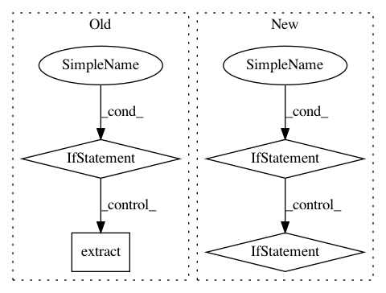

2716ec90b5be79d67cb39c46f1182b9827fa60bc,scripts/datasets/market1501.py,,main,#,38
Before Change
fpath = osp.join(root, name+".zip")
exdir = osp.join(root, name)
if os.path.exists(fpath):
if not osp.isdir(exdir):
extract(fpath, root)
make_list(exdir)
else:
download(url, fpath, False)
extract(fpath, root)
make_list(exdir)
if __name__ == "__main__":
main()
After Change
makedirs(root)
fpath = osp.join(root, name + ".zip")
exdir = osp.join(root, name)
if not osp.exists(fpath) and not osp.isdir(exdir) and args.no_download:
raise ValueError(("{} dataset archive not found, make sure it is present."
" Or you should not disable "--no-download" to grab it".format(fpath)))
// Download by default
if not args.no_download:
print("Downloading dataset")
download(url, fpath, overwrite=False)
print("Dataset downloaded")
// Extract dataset if fresh copy downloaded or existing archive is yet to be extracted
if not args.no_download or not osp.isdir(exdir):
extract(fpath, root)
make_list(exdir)
In pattern: SUPERPATTERN
Frequency: 3
Non-data size: 4
Instances
Project Name: dmlc/gluon-cv
Commit Name: 2716ec90b5be79d67cb39c46f1182b9827fa60bc
Time: 2020-05-03
Author: 42975160+HieronymusLex@users.noreply.github.com
File Name: scripts/datasets/market1501.py
Class Name:
Method Name: main
Project Name: pantsbuild/pants
Commit Name: edcd459b9cf96c3e5ffc8d6965df5f2e731b3b84
Time: 2014-10-30
Author: tinystatemachine@gmail.com
File Name: src/python/pants/cache/restful_artifact_cache.py
Class Name: RESTfulArtifactCache
Method Name: use_cached_files
Project Name: pytorch/text
Commit Name: 038515ccfb6df094e22b9f14fcf9d8c391bc4eaa
Time: 2019-07-26
Author: cpuhrsch@fb.com
File Name: torchtext/utils.py
Class Name:
Method Name: extract_archive